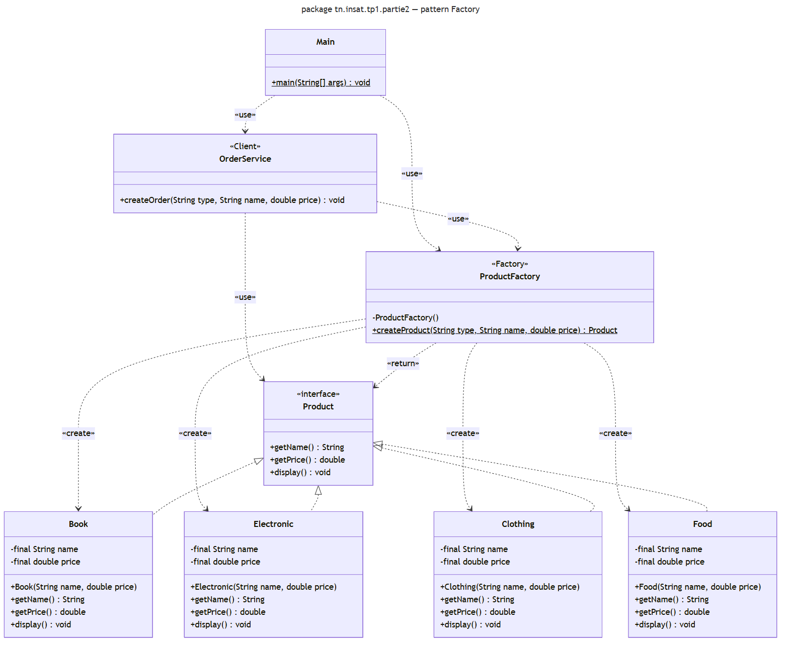
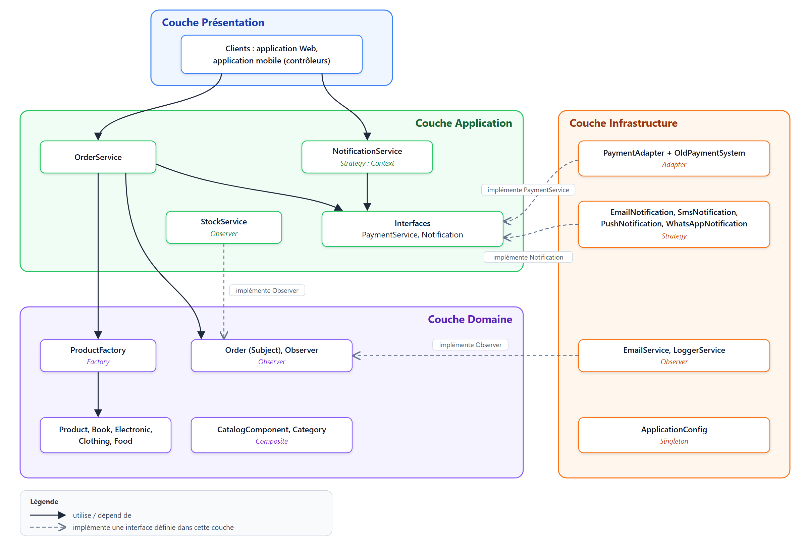

Architectures Réactives et Microservices
TP1 — Design Patterns : refactoring d'une application Java
Sommaire
Partie 1Analyse du code existant
1Problèmes de conception
- Création directe avec
new:OrderServicecrée lui-même les produits, il est donc lié à la classe concrète. - Cascade de
if / elsesur un texte : chaque nouveau type ajoute une branche. - Le type n'est qu'un
String: un livre et un vêtement sont des objets de la même classe, sans comportement propre. - Trop de responsabilités :
OrderServicechoisit le type, crée le produit et gère la commande.
2Pourquoi ajouter un type rend le code difficile à maintenir
Pour ajouter FOOD, il faut modifier OrderService (une branche de plus), puis tout retester. Si d'autres classes créent aussi des produits, il faut recopier le même if/else partout, avec un risque d'oubli.
3Principe mis à mal
Le principe ouvert/fermé (OCP, Open-Closed Principle) : une classe doit être ouverte à l'extension mais fermée à la modification. Ici, ajouter un type oblige à modifier OrderService. Le SRP (une seule responsabilité) et le DIP (dépendre d'abstractions) sont aussi touchés.
4Pattern proposé
Factory (Simple Factory) : une classe ProductFactory crée le bon produit selon son type, et chaque produit devient une classe qui implémente une interface Product.
5Justification
- Le problème porte sur la création des objets : on choisit donc un pattern de création.
- Tous les
newsont regroupés dans la fabrique.OrderServicene connaît plus que l'interfaceProduct. - Ajouter un type = une nouvelle classe + un
casedans la fabrique, sans toucher àOrderService. - La Simple Factory est la version la plus simple qui résout le problème. Factory Method ou Abstract Factory seraient trop lourds ici.
Partie 2Refactoring de la création des produits (Factory)
Code : dossier partie2/

1Interface Product avec display()
public interface Product {
String getName();
double getPrice();
void display();
}2Classes Book, Electronic et Clothing
public class Book implements Product {
private final String name;
private final double price;
public Book(String name, double price) {
this.name = name;
this.price = price;
}
@Override
public String getName() { return name; }
@Override
public double getPrice() { return price; }
@Override
public void display() {
System.out.println("Book : " + name + " - " + price + " DT");
}
}Electronic et Clothing sont identiques ; seul le texte de display() change. Chaque classe a donc son propre affichage (polymorphisme).
3Classe responsable de la création : ProductFactory
public class ProductFactory {
private ProductFactory() { }
public static Product createProduct(String type, String name, double price) {
switch (type.toUpperCase()) {
case "BOOK":
return new Book(name, price);
case "ELECTRONIC":
return new Electronic(name, price);
case "CLOTHING":
return new Clothing(name, price);
case "FOOD":
return new Food(name, price);
default:
throw new IllegalArgumentException("Unknown product type: " + type);
}
}
}C'est le seul endroit qui décide quelle classe créer. La méthode retourne un Product : l'appelant ne connaît pas la classe concrète.
4OrderService sans new
public void createOrder(String type, String name, double price) {
Product product = ProductFactory.createProduct(type, name, price);
System.out.println("Order created for " + product.getName());
}Le if/else et les new ont disparu : OrderService ne connaît que Product et ProductFactory.
5Ajouter Food sans modifier OrderService
Il suffit d'écrire la classe Food (comme Book) et d'ajouter case "FOOD" dans la fabrique. OrderService n'est pas modifié.
6Tester plusieurs créations
Product p = ProductFactory.createProduct("BOOK", "Design Patterns", 45);
p.display();
ProductFactory.createProduct("ELECTRONIC", "Laptop", 2500).display();
ProductFactory.createProduct("CLOTHING", "Jacket", 180).display();
ProductFactory.createProduct("FOOD", "Dates", 12.5).display();
OrderService orderService = new OrderService();
orderService.createOrder("BOOK", "Design Patterns", 45);
orderService.createOrder("FOOD", "Dates", 12.5);Résultat de partie2.Main :
Book : Design Patterns - 45.0 DT
Electronic : Laptop - 2500.0 DT
Clothing : Jacket - 180.0 DT
Food : Dates - 12.5 DT
Order created for Design Patterns
Order created for Dates7Pourquoi c'est plus flexible que la création directe
OrderServicedépend d'une interface, pas des classes concrètes : on peut ajouter ou modifier un produit sans le toucher (OCP, DIP).- La création est à un seul endroit : pour un nouveau type, on sait où intervenir.
- Chaque produit est une vraie classe avec son propre comportement, au lieu d'un simple texte.
Partie 3Instance unique pour la configuration (Singleton)
Code : dossier partie3/
Problème : avec un constructeur public, chaque composant peut créer sa propre configuration, et elles peuvent être différentes. Le Singleton garantit qu'il n'existe qu'une seule instance, accessible partout.
classDiagram
class ApplicationConfig {
<<Singleton>>
-ApplicationConfig instance$
-String databaseUrl
-String applicationName
-ApplicationConfig()
+getInstance()$ ApplicationConfig
+getDatabaseUrl() String
+setDatabaseUrl(String databaseUrl) void
+getApplicationName() String
+setApplicationName(String applicationName) void
}
ApplicationConfig --> "0..1" ApplicationConfig : instance unique1Modifier le constructeur et l'accès à l'instance
private static ApplicationConfig instance; // l'unique instance
private ApplicationConfig() { // avant : public
}Le constructeur devient private : new ApplicationConfig() ne compile plus en dehors de la classe.
2Implémenter getInstance()
public static synchronized ApplicationConfig getInstance() {
if (instance == null) {
instance = new ApplicationConfig();
}
return instance;
}- Au premier appel, l'objet est créé ; ensuite, on retourne toujours le même.
synchronizedempêche deux threads de créer deux instances en même temps.
3Vérifier que c1 et c2 sont le même objet
ApplicationConfig c1 = ApplicationConfig.getInstance();
ApplicationConfig c2 = ApplicationConfig.getInstance();
System.out.println(c1 == c2);
c1.setApplicationName("INSAT Shop");
System.out.println(c2.getApplicationName());Résultat de partie3.Main :
true
INSAT Shoptrue : c1 et c2 désignent le même objet. Le nom modifié via c1 se lit via c2.
4Contexte où ce pattern est pertinent
Quand un objet doit être unique et partagé par toute l'application : configuration, journal (logger), pool de connexions à la base, cache.
Précaution : c'est une sorte de variable globale, à utiliser seulement si l'unicité est vraiment nécessaire. En microservices, il est unique par programme (par JVM), pas pour tout le système.
Partie 4Intégration d'un ancien système de paiement (Adapter)
Code : dossier partie4/
Problème : le client attend PaymentService.pay(), mais l'ancien système propose makePayment(), et il n'implémente pas PaymentService. L'Adapter rend compatibles ces deux interfaces sans modifier ni le client ni l'ancien système.
classDiagram
direction LR
class Main {
+main(String[] args)$ void
}
class PaymentService {
<<interface>>
+pay(double amount) void
}
class PaymentAdapter {
-OldPaymentSystem oldPaymentSystem
+PaymentAdapter(OldPaymentSystem oldPaymentSystem)
+pay(double amount) void
}
class OldPaymentSystem {
+makePayment(double value) void
}
Main --> PaymentService : Client utilise Target
PaymentService <|.. PaymentAdapter : Adapter
PaymentAdapter --> OldPaymentSystem : Adaptee1Classe intermédiaire : PaymentAdapter
public class PaymentAdapter implements PaymentService {
private final OldPaymentSystem oldPaymentSystem;
public PaymentAdapter(OldPaymentSystem oldPaymentSystem) {
this.oldPaymentSystem = oldPaymentSystem;
}
@Override
public void pay(double amount) {
oldPaymentSystem.makePayment(amount);
}
}L'adaptateur a la forme attendue par le client (implements PaymentService) et traduit pay() en makePayment().
2Code client indépendant de l'ancien système
PaymentService payment = new PaymentAdapter(new OldPaymentSystem());
payment.pay(250);Le client ne manipule que PaymentService et n'appelle jamais makePayment(). OldPaymentSystem n'apparaît qu'à la ligne de création.
3Tester un paiement de 250
Résultat de partie4.Main :
Payment : 250.0L'appel pay(250) est bien arrivé dans makePayment() de l'ancien système.
4Pourquoi ne pas modifier OldPaymentSystem
- On n'a souvent pas le droit ou pas le code source (bibliothèque externe, fournisseur).
- Il fonctionne et d'autres programmes l'utilisent peut-être : le modifier risque de les casser.
- OCP : on ajoute une classe au lieu de modifier un code qui marche.
- Si on abandonne l'ancien système plus tard, seul l'adaptateur change ; le client ne bouge pas.
Partie 5Catalogue sous forme d'arbre (Composite)
Code : dossier partie5/
Problème : un catalogue contient des catégories, qui contiennent des produits ou d'autres catégories. Le Composite permet de traiter un produit et une catégorie de la même manière.
classDiagram
direction TB
class CatalogComponent {
<<interface>>
+display(String indent) void
}
class Product {
-String name
-double price
+display(String indent) void
}
class Category {
-String name
-List~CatalogComponent~ children
+add(CatalogComponent component) void
+remove(CatalogComponent component) void
+display(String indent) void
}
CatalogComponent <|.. Product : Leaf
CatalogComponent <|.. Category : Composite
Category o-- "0..*" CatalogComponent : childrenLes deux classes sont des CatalogComponent. Product est une feuille : il ne contient rien. Category est un composite : elle contient une liste de CatalogComponent.
1Abstraction commune
public interface CatalogComponent {
void display(String indent);
}2Product : élément individuel
public class Product implements CatalogComponent {
private final String name;
private final double price;
public Product(String name, double price) {
this.name = name;
this.price = price;
}
@Override
public void display(String indent) {
System.out.println(indent + "- " + name + " (" + price + " DT)");
}
}3 et 4Category : contient des produits et/ou des catégories
public class Category implements CatalogComponent {
private final String name;
private final List<CatalogComponent> children = new ArrayList<>();
public Category(String name) {
this.name = name;
}
public void add(CatalogComponent component) {
children.add(component);
}
public void remove(CatalogComponent component) {
children.remove(component);
}
...
}La liste est de type List<CatalogComponent> : add() accepte donc un produit ou une autre catégorie.
5display() affiche toute l'arborescence
@Override
public void display(String indent) {
System.out.println(indent + "+ " + name);
for (CatalogComponent child : children) {
child.display(indent + " ");
}
}Une catégorie affiche son nom, puis demande à chaque enfant de s'afficher avec 4 espaces de plus. Un enfant catégorie fait de même (récursion). Un produit affiche juste sa ligne, et la récursion s'arrête là.
6Test à partir de l'objet Catalogue
Le Main construit Catalogue → Books, Electronics, Clothing → produits, puis appelle catalogue.display(""). Résultat de partie5.Main :
+ Catalogue
+ Books
- Book 1 (45.0 DT)
- Book 2 (38.5 DT)
+ Electronics
- Laptop (2500.0 DT)
- Smartphone (1200.0 DT)
+ Clothing
- Shirt (60.0 DT)
- Jacket (180.0 DT)Partie 6Notification des changements d'état (Observer)
Code : dossier partie6/
Problème : quand une commande change d'état, l'e-mail, le stock et le journal doivent être prévenus. L'Observer permet à Order de les prévenir automatiquement sans les connaître.
classDiagram
class Subject {
<<interface>>
+attach(Observer observer) void
+detach(Observer observer) void
+notifyObservers() void
}
class Observer {
<<interface>>
+update(String status) void
}
class Order {
-String status
-List~Observer~ observers
+setStatus(String status) void
+getStatus() String
}
class EmailService {
+update(String status) void
}
class StockService {
+update(String status) void
}
class LoggerService {
+update(String status) void
}
Subject <|.. Order : ConcreteSubject
Order o-- "0..*" Observer : observers
Observer <|.. EmailService : Notification
Observer <|.. StockService : Gestion du stock
Observer <|.. LoggerService : Journalisation6 et 7Abstractions Observer et Subject
public interface Observer {
void update(String status);
}
public interface Subject {
void attach(Observer observer);
void detach(Observer observer);
void notifyObservers();
}8 et 10Order, le sujet observé, notifie à chaque changement
public class Order implements Subject {
private String status = "CREATED";
private final List<Observer> observers = new ArrayList<>();
@Override
public void attach(Observer observer) { observers.add(observer); }
@Override
public void detach(Observer observer) { observers.remove(observer); }
@Override
public void notifyObservers() {
for (Observer observer : observers) {
observer.update(status);
}
}
public void setStatus(String status) {
this.status = status;
notifyObservers(); // notification automatique
}
public String getStatus() { return status; }
}Order ne connaît que l'interface Observer : on n'y trouve ni EmailService, ni StockService, ni LoggerService.
9Les observateurs
public class EmailService implements Observer {
@Override
public void update(String status) {
System.out.println("EmailService : email sent to customer, order status = " + status);
}
}StockService et LoggerService sont écrits de la même façon (l'envoi réel est simulé par un affichage).
11Test CREATED → SHIPPED
Order order = new Order();
order.attach(new EmailService());
order.attach(new StockService());
order.attach(new LoggerService());
System.out.println("Initial status Before Update : " + order.getStatus());
order.setStatus("SHIPPED");Résultat de partie6.Main :
Initial status Before Update : CREATED
EmailService : email sent to customer, order status = SHIPPED
StockService : stock updated, order status = SHIPPED
LoggerService : [LOG] order status changed to SHIPPEDQuestionEt si Order appelait directement emailService.update(), etc. ?
public class Order {
private String status = "CREATED";
private EmailService emailService = new EmailService();
private StockService stockService = new StockService();
private LoggerService loggerService = new LoggerService();
public void setStatus(String status) {
this.status = status;
emailService.update(status);
stockService.update(status);
loggerService.update(status);
}
}- Couplage fort :
Orderdépend de chaque service. SiEmailServicerenommeupdate(), il faut modifierOrder. - OCP violé : ajouter un service (SMS) ou en retirer un oblige à modifier
Order. - Pas de souplesse : impossible d'abonner ou de désabonner un service pendant l'exécution.
- Tests difficiles : tester un changement d'état enverrait de vrais e-mails.
Partie 7Challenge : choisir le pattern adapté (Strategy)
Code : dossier partie7/
Code initial :
public void send(String type, String message) {
if (type.equals("EMAIL")) {
System.out.println("Sending Email : " + message);
}
else if (type.equals("SMS")) {
System.out.println("Sending SMS : " + message);
}
else if (type.equals("PUSH")) {
System.out.println("Sending Push Notification : " + message);
}
}1Problème de conception
- Une cascade de
if/elsesur un texte choisit la façon d'envoyer : ajouter WhatsApp oblige à modifier la classe (OCP violé). - Une seule méthode contient le code de tous les moyens d'envoi (SRP).
- Un type inconnu est ignoré en silence.
2Pattern choisi : Strategy
- On a une famille d'algorithmes (les façons d'envoyer) interchangeables. Strategy met chacun dans sa propre classe, derrière une interface commune.
- Rôles :
Notification= Strategy,EmailNotification… = ConcreteStrategy,NotificationService= Context. - Pas Factory (on ne veut pas créer mais faire varier un comportement), ni Observer (on envoie par un moyen, pas à tous les abonnés), ni Adapter (pas d'interface incompatible).
classDiagram
direction LR
class NotificationService {
-Notification notification
+NotificationService(Notification notification)
+setNotification(Notification notification) void
+send(String message) void
}
class Notification {
<<interface>>
+send(String message) void
}
NotificationService --> Notification : Context utilise Strategy
Notification <|.. EmailNotification : ConcreteStrategy
Notification <|.. SmsNotification : ConcreteStrategy
Notification <|.. PushNotification : ConcreteStrategy
Notification <|.. WhatsAppNotification : ConcreteStrategy3Code refactorisé
public interface Notification {
void send(String message);
}
public class EmailNotification implements Notification {
@Override
public void send(String message) {
System.out.println("Sending Email : " + message);
}
}
// SmsNotification et PushNotification : même forme
public class NotificationService {
private Notification notification;
public NotificationService(Notification notification) {
this.notification = notification;
}
public void setNotification(Notification notification) {
this.notification = notification;
}
public void send(String message) {
notification.send(message); // plus aucun if/else
}
}4Ajouter WhatsAppNotification sans modifier la classe principale
public class WhatsAppNotification implements Notification {
@Override
public void send(String message) {
System.out.println("Sending WhatsApp : " + message);
}
}NotificationService n'est pas modifié. Résultat de partie7.Main, qui envoie le même message par les 4 moyens :
Sending Email : Your order has been shipped
Sending SMS : Your order has been shipped
Sending Push Notification : Your order has been shipped
Sending WhatsApp : Your order has been shipped5Ancienne et nouvelle architecture
| Critère | Avant (if/else) | Après (Strategy) |
|---|---|---|
| Modularité | Tout dans une seule méthode | Une classe par moyen d'envoi |
| Couplage | Le service contient le code de tous les moyens | Le service ne dépend que de l'interface Notification |
| Maintenabilité | Ajouter WhatsApp = modifier du code qui marche | Ajouter WhatsApp = écrire une nouvelle classe |
6Diagramme d'architecture

Les dépendances vont vers l'intérieur (Présentation → Application → Domaine). L'infrastructure implémente des interfaces définies par les couches internes : on peut la remplacer sans toucher au métier.
7Place des patterns étudiés dans cette architecture
| Pattern | Couche | Rôle |
|---|---|---|
| Factory | Domaine | Crée les produits pour OrderService |
| Singleton | Infrastructure | Configuration unique de l'application |
| Adapter | Infrastructure | Branche l'ancien paiement sur PaymentService |
| Composite | Domaine | Catalogue en arbre |
| Observer | Domaine (Order) + observateurs en Application/Infrastructure | Prévient les services quand une commande change d'état |
| Strategy | Application (interface) + Infrastructure (classes d'envoi) | Moyens de notification interchangeables |
QuestionPourquoi un Design Pattern n'est pas une architecture complète ?
- Un pattern résout un problème précis, sur quelques classes (créer des objets, adapter une interface…).
- Une architecture organise toute l'application : couches, responsabilités, sens des dépendances, clients.
- Une architecture combine plusieurs patterns, chacun là où il résout un problème. Utiliser un pattern sans problème à résoudre complique le code inutilement.
Partie 8Question d'architecture (architecture en couches)
flowchart TB
C["Clients : application Web, application mobile, autres applications"]
P["Couche Présentation<br/>reçoit les demandes des clients"]
A["Couche Application<br/>organise les cas d'utilisation"]
D["Couche Domaine<br/>le métier : produits, commandes, catalogue"]
I["Couche Infrastructure<br/>détails techniques : paiement, e-mail, configuration"]
C --> P
P --> A
A --> D
I -.->|"implémente les interfaces de"| A
I -.->|"implémente les interfaces de"| D| Couche | Rôle | Dépend de |
|---|---|---|
| Présentation | Reçoit les demandes des clients (API REST, contrôleurs) | Application |
| Application | Organise les cas d'utilisation (commander, payer, notifier) | Domaine |
| Domaine | Le métier : produits, commandes, catalogue | Rien |
| Infrastructure | Détails techniques : paiement, e-mail, configuration | Application et Domaine (implémente leurs interfaces) |
Dans quelle couche placer chaque élément ?
| Élément | Couche | Pourquoi |
|---|---|---|
Product | Domaine | Objet métier |
ProductFactory | Domaine | Crée les objets du domaine |
Order | Domaine | Objet métier (commande et son état) |
OrderService | Application | Organise le cas « passer une commande » |
PaymentAdapter | Infrastructure | Lien avec un système externe |
EmailService | Infrastructure | Envoi d'e-mails : détail technique |
ApplicationConfig | Infrastructure | Paramètres techniques |
L'interface PaymentService est dans l'Application (c'est OrderService qui en a besoin), et Observer dans le Domaine (c'est Order qui prévient). L'infrastructure les implémente : elle dépend des couches internes, jamais l'inverse.
Plusieurs types de clients
L'application Web, l'application mobile et les autres clients passent tous par la couche Présentation (par exemple une API REST commune). Ils réutilisent les mêmes couches Application et Domaine : les règles métier sont écrites une seule fois, et un nouveau client ne demande qu'un ajout dans la Présentation.